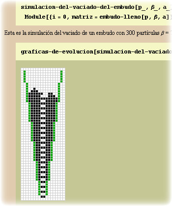
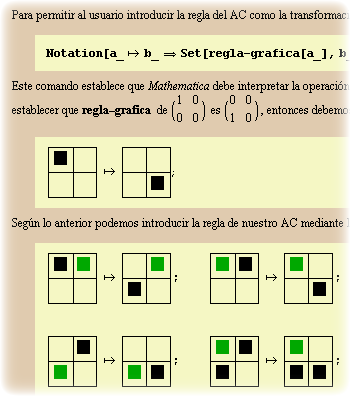
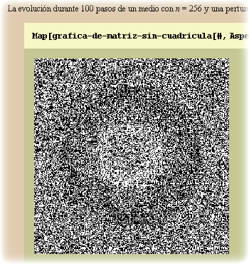

Simulación de autómatas celulares con vecindad de Margolus (2000 - 2002)¶
La parte más interesante y extensa de mi tesis de pregrado fue la creación de un notebook en el que explicaba paso a paso cómo simular el flujo de arena por un embudo, por medio de un autómata celular con vecindad de Margolus. Haciendo uso de las increíbles capacidades de manipulación simbólica que ofrece Mathematica, durante mi trabajo también ideé una forma en la que se podían definir gráficamente las reglas de evolución del autómata y creé una paleta para poder introducirlas fácilmente a cualquier otro notebook. Mi intención era que los futuros usuarios del notebook pudieran definir sus propias reglas, sin tener que preocuparse por como programarlas, y que sólo tuvieran que crear una rutina de visualización para observar los resultados de sus autómatas. Como ejemplo, yo mismo definí las reglas del gas HPP y mostré como éste puede reproducir cualitativamente el comportamiento de una onda de presión en un gas de partículas. Los interesados pueden descargar el notebook y la paleta que lo acompaña (actualizados para Mathematica 8), y pueden encontrar más reglas de evolución para otros fenómenos físicos en la tesis de Norm Margolus. |

|